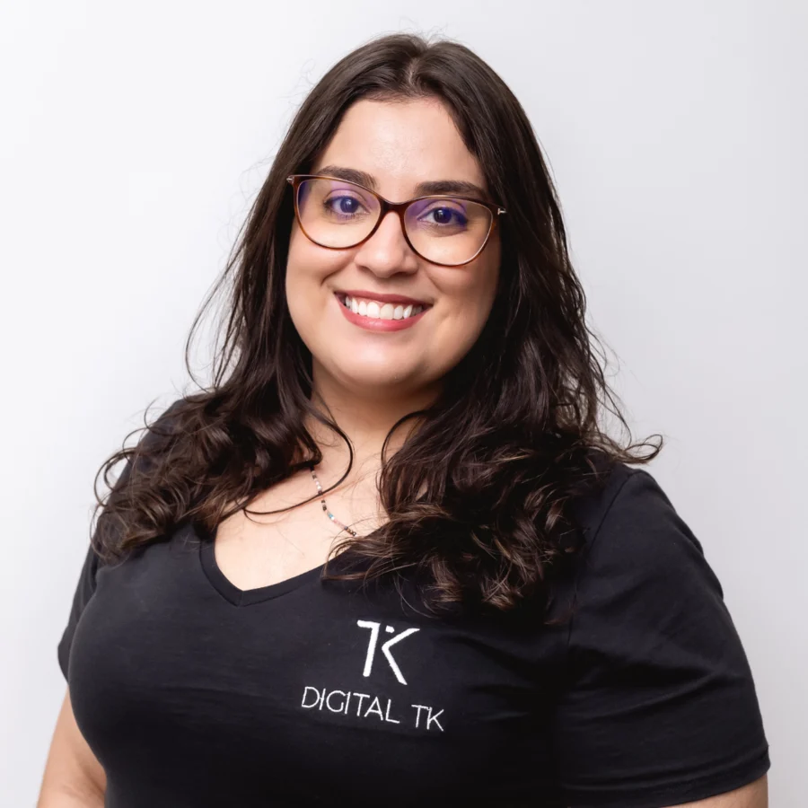
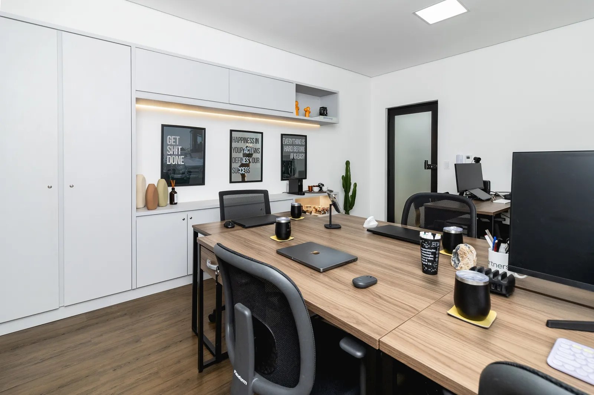
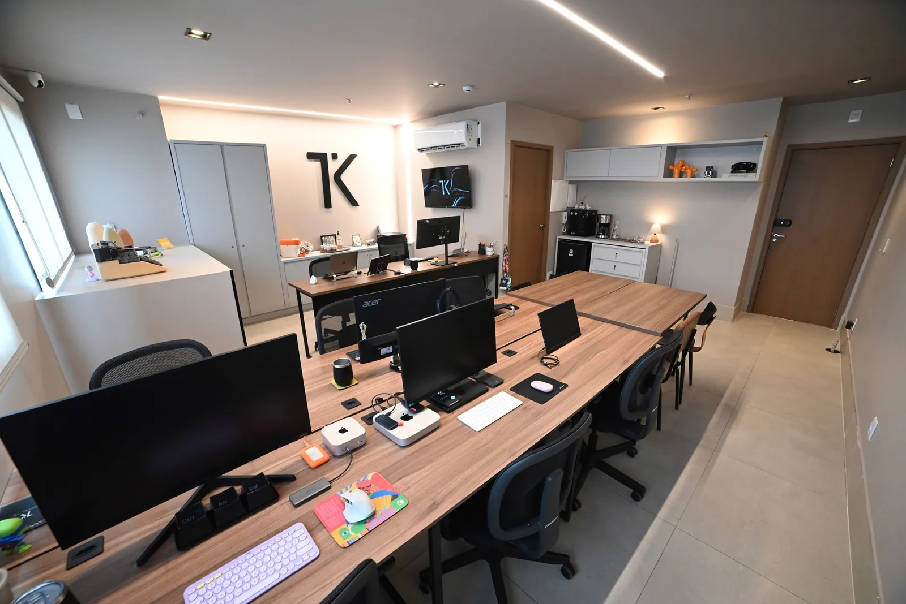

Cada mercado
tem um público diferente.
A Digital TK é uma agência de marketing em Uberlândia que une estratégia, conteúdo, criação e produção para ajudar empresas a se posicionarem melhor, fortalecerem suas marcas e se comunicarem com quem realmente importa.
Antes de existir a Digital TK, já existiam anos de publicidade. Thatiana Kehdi começou sua trajetória há mais de uma década e acompanhou de perto as mudanças na forma como empresas se comunicam, vendem e constroem presença no digital.
Essa experiência ajudou a formar a maneira como a Digital TK trabalha hoje: entendendo primeiro o negócio para depois pensar na comunicação.

A Digital TK nasceu em Uberlândia para ajudar empresas da cidade a terem uma comunicação mais estratégica, organizada e próxima da realidade do negócio.
A gente entende a rotina do empresário, identifica o que precisa ser comunicado e transforma isso em estratégia, conteúdo, campanhas e ações que façam sentido para cada empresa.

Na Digital TK, a gente não trabalha com pacote pronto, porque cada empresa tem uma realidade diferente. Primeiro entendemos o seu negócio, o momento da empresa, o público, os concorrentes e o que você precisa melhorar na comunicação.
A partir disso, nossa equipe monta uma estratégia personalizada e define quais frentes do marketing e da publicidade fazem mais sentido para alcançar seus objetivos. Podemos cuidar do planejamento, redes sociais, campanhas, criação, captação, produção de conteúdo e outras necessidades que surgirem ao longo do trabalho.
Nosso papel é acompanhar de perto os negócios de Uberlândia e construir uma comunicação que funcione para a realidade de cada empresa.
A Digital TK atende empresas de Uberlândia de diferentes segmentos, o que aumenta o repertório da equipe e permite enxergar comunicação por diferentes perspectivas. Conhecer de perto o mercado da cidade também ajuda a entender o comportamento local, os concorrentes e a forma como cada negócio precisa se posicionar.
tem um público diferente.
tem uma necessidade diferente.
a estratégia também precisa ser diferente.
CNPJs já passaram por aqui.

Se você tem uma empresa em Uberlândia e está procurando uma equipe para assumir sua comunicação com estratégia, planejamento, captação e produção, conte um pouco sobre o seu negócio. Vamos marcar uma conversa para entender onde sua empresa está hoje e como a Digital TK pode ajudar.